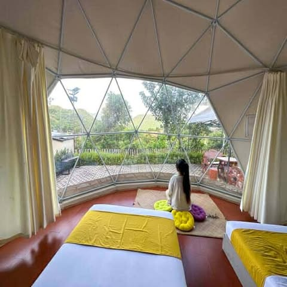

9. The Apiary Mountain Camp and Farm

Address: Lot 152-A Sitio Maysawa Cuyambay, Tanay, Rizal, Philippines, 1980
Price: Starts from Php 8,831.17/ Night (Family Glamping Dome - Double Bed)
The Apiary Mountain Camp and Farm in Tanay, Rizal, offers a range of activities amidst scenic landscapes. Guests can enjoy guided hikes, bird-watching, eco-farming, ziplining, and rappelling adventures. Dining features farm-to-table meals with fresh local ingredients, complemented by cosy rustic settings.

The Apiary Mountain Camp and Farm is the smartest choice for you who are looking for affordable accommodation with outstanding service. Savor your favorite dishes with special cuisines from The Apiary Mountain Camp and Farm exclusively for you. Staying at The Apiary Mountain Camp and Farm will surely satisfy you with its great hospitality and affordable price.